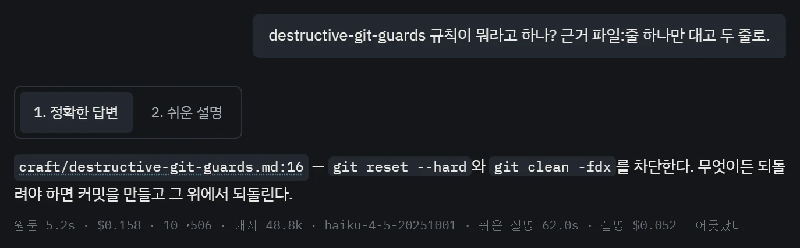

위키에 묻기와 Jev
앱의 위키 포커스에서 저장소에 대해 물으면, 문서 · 계획 · 결정 기록 · 코드를 근거로 답해요. 답에 나온 파일 이름을 누르면 그 자리가 열려요. 어디서 찾을지, 찾은 게 쓸모 있는지 같은 갈림길은 결정 모델 Jev가 골라요.
답에는 근거가 붙어요

“왜 안 되지?”라고 물으면 코드보다 실제로 돌아간 기록(로그, 추적, 구조 문서)을 먼저 봐요. 코드는 일어날 수 있는 일을, 기록은 실제로 일어난 일을 보여 주니까요. 확인하지 못한 추측은 추측이라고 표시해요.
대화가 길어져 문맥을 비우면, 그 대화의 원문과 요약이 저장소의 .wiki/memory/에 남아요. 다음 질문에서는 그것도 근거가 돼요.
Jev는 고르기만 해요
Jev(jev-1.13.0)는 TypeSafe의 결정 모델이에요. 글을 쓰는 대신, 코드가 정한 후보 중에서 검색 경로와 다음 동작을 골라요. 왜 들였는지는 이야기 5장에 있어요.
| 자리 | Jev가 고르는 것 | 코드가 쥐고 있는 것 |
|---|---|---|
| 검색 경로 | 검색할지 바로 답할지, 어느 출처에서 찾을지 | 내놓을 출처 목록, 바로 답할 수 있는 조건 |
| 근거 판정 | 찾은 조각이 쓸모 있는지, 서로 부딪히는지 | 후보 목록, 허용량 |
| 충분한지 | 이걸로 충분한지, 무엇을 더 찾을지 | 보강 순서, 최대 3라운드 |
| 작업 흐름 | 바로 시작할지 근거부터 모을지 되물을지, 검사를 더 돌릴지, 리뷰 지적을 바로 고칠지 | 허용된 동작 목록, 권한 |
무엇을 할 수 있는지는 늘 코드가 정해요. Jev는 규칙을 끄거나 권한을 넓힐 수 없어요.
Jev가 확신하지 못하거나, 연결이 끊기거나, 예산을 다 쓰면 그걸 “아니다”로 처리하지 않아요. 기본 검색으로 돌아가 답하고, 의미 판정을 못 했다는 걸 밝혀요. 모든 단계가 마감 시각 · 호출 수 · 토큰을 한 예산으로 나눠 써요.
처음엔 기록만 하고, 켜는 건 직접 해요
- 꺼짐키 없음에이전트가 직접 저장소를 찾아 읽고 답해요
- 기록만shadow · 기본에이전트가 답하고, Jev는 옆에서 자기 판단만 남겨요
- 켜짐activeJev가 검색 경로를 고르고 근거를 걸러 묶어요. 답의 인용이 근거와 맞는지 검사한 뒤에 내보내요
TYPESAFE_API_KEY가 없으면 꺼져 있고, 넣으면 기록만 하는 상태로 시작해요. 실제로 고르게 하려면 설정에서 켜요. 되돌릴 때는 python tool/eval/rollout.py off로 바로 끄고, 지식 그래프 탐색만 끄려면 WIKI_GRAPH_RETRIEVAL=off를 써요.
켜기 전에 고정된 영어 평가 세트로 게이트 일곱 개를 모두 통과했어요. 기록해 둔 실행을 지금 코드가 똑같이 결정하는지, 돈을 쓰지 않고 다시 돌려 볼 수도 있어요.
찾는 곳은 이 저장소 안이에요
검색 재료는 저장소의 문서, 결정 기록, 대화 메모리, 공통 규칙, 그리고 채택한 논문과 웹 문서예요. 이걸 조각으로 나눠 로컬 데이터베이스에 넣고, 한국어는 미리 영어로 맞춰 둬요. 찾을 때는 키워드 검색과 의미 검색을 섞고, 지식 그래프를 따라 몇 걸음만 더 넓혀요.
그래프의 관계는 후보를 찾는 데만 써요. 두 문서가 이어져 있다고 내용이 맞다는 증거가 되지는 않아요. 다른 저장소의 조각은 절대 섞이지 않아요.